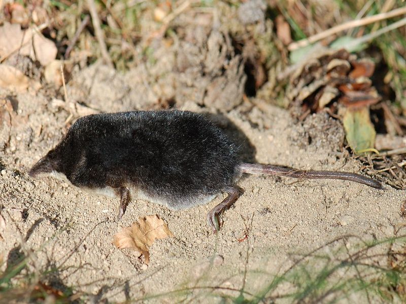

Wasserspitzmaus
Neomys fodiens
Alle Lebensräume des Riedes sind von Spitzmäusen besiedelt, die keine Mäuse sind, sondern zu den Insektenfressern gehören. Die größte und auffälligste Art ist die schwarz-weiß gefärbte Wasserspitzmaus, die in den Teichen und Gräben nach Nahrung jagt. Tauchend erbeutet sie WasserInsekten, Larven, Schnecken, kleine Fische und junge Frösche. Spitzmäuse müssen mindestens ihr eigenes Körpergewicht pro Tag an Nahrung verzehren, um zu überleben. Deshalb können sie sich keine langen Schlafpausen erlauben, allenfalls ein kleines „Nickerchen“ zwischendurch.